Ты, наверное, помнишь, что самая популярная (а значит – и престижная; да и интересная тоже!) работа в IT – это работа программиста. Приступай к ее изучению!
Познавать азы программирования тебе поможет визуальный язык программирования Blockly, разработанный компанией Google.
Немного фактов о компании Google Компания основана Ларри Пейджем и Сергеем Брином. Впервые она была зарегистрирована 4 сентября 1998 года.
Название Google - это математический термин "гугол" (googol),
который обозначает число, выраженное единицей со 100 нулями.
При изучении этого курса тебе понадобиться почта Gmail. Учти, что пользоваться ей можно только с 13 лет. Если у тебя ещё нет её, зарегистрируйся, приукрасив свой возраст.
Ты будешь использовать Blockly - визуальный язык программирования, в котором программа создаётся собиранием необходимых блоков.
Помни, что этапы создания анимации зависят от того, какова цель этой анимации. Если это анимация простого рекламного баннера с простейшими элементами, то можно обойтись всего лишь проработкой концепта, раскадровкой (не обязательно), аниматиком (не обязательно), и уже непосредственно анимацией.
Большинство программ состоят из строк кода, но Blockly - визуальный язык программирования. Это значит, что вместо текста программы (даже не единичек и нулей!) все-все выглядит в виде блоков, которые можно двигать и соединять между собой. Ты скоро убедишься: это гораздо проще и нагляднее, чем непонятный текст из картинки в начале семинара!
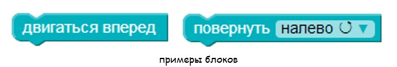Программа - это набор команд, по которым должен работать компьютер.
Реши головоломку
Ссылка на задание https://blockly-games.appspot.com/puzzle
Для каждого животного (зелёный блок), прикрепи его изображение, выбери число ног и собери его отличительные черты.
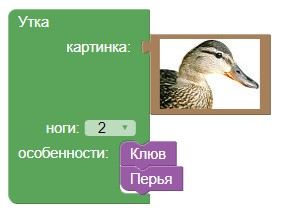Ты когда-нибудь задумывался, как приготовить хороший чай? Нет? Тогда поразмышляй об этом несколько минут перед тем, как читать следующий абзац. Забудь пока о том, что команды нужно записывать в виде единичек и ноликов: представь себе, что ты – начальник, и ты придумываешь своим подчиненным программистам программу, которую они должны будут «перевести» на язык компьютера. Попробуй также представить себе, что ты – программист, и должен объяснить правила приготовления чая компьютеру. Готов?
Итак, поехали: 1. Вскипятить воду 2. Сложить чай в заварник 3. Залить кипятком 4. Добавить сахар 5. Размешать через 3 минуты 6. Готово!
«Стоп!», - воскликнет самый внимательный читатель. – «Мы ведь не указали количество чая, количество сахара и еще много чего! И некоторые действия – составные, их нужно разбить на несколько отдельных!»
И он будет абсолютно прав! Компьютеру всегда нужно знать точно, что ты хочешь сделать («налей воды» не прокатит, нужно знать, как минимум, откуда, куда и сколько, а при необходимости – еще и скорость наливания!). Подумай теперь еще раз о том, как нужно модифицировать список действий, чтобы компьютер его понял.
Вот что могло бы получиться в результате:
1. Налить в единственный в квартире чайник 2 литра воды
2. Поставить чайник на подставку
3. Включить чайник
4. Узнать количество гостей
5. Сложить в заварник чай из черной банки: по одной ложке на
каждого гостя; если гостей больше 10 – то только 10 ложек
6. Подождать, пока вода в чайнике вскипит
7. Залить чай в заварнике кипятком из расчета 200г воды на каждого
гостя; если гостей больше 10 – налить до красной линии на стенке
заварника
8. Подождать 3 минуты
9. Насыпать в заварник сахару из банки в левом шкафу: по две ложки
на каждого гостя; если гостей больше 10 – только 10*2 = 20 ложек
10. Размешивать ложкой из стола, пока сахар не растает
11. Если гостей больше 10, уменьшить количество гостей без чая на 10
и начать с п. 5; иначе идти дальше
12. Готово!
Такая последовательность действий будет гораздо понятнее компьютеру, чем предыдущая: у него будет гораздо меньше «глупых» вопросов к тебе (вроде «а откуда взять?» или «как я узнаю, кипяток ли в чайнике?»). На самом деле это и есть самая настоящая работа программиста: именно он и занимается составлением таких последовательностей действий для компьютера (а не только их переводом на какой-нибудь понятный компьютеру язык!).
Заставив компьютер выполнить эти действия, ты получишь хороший чай и оставишь гостей довольными! Сама последовательность команд называется алгоритмом. Ты наверняка слышал это слово раньше, но теперь точно знаешь, что под ним понимается!
Помоги птичке поймать непослушную свинью. Составляй блоки, чтобы выполнить программу.
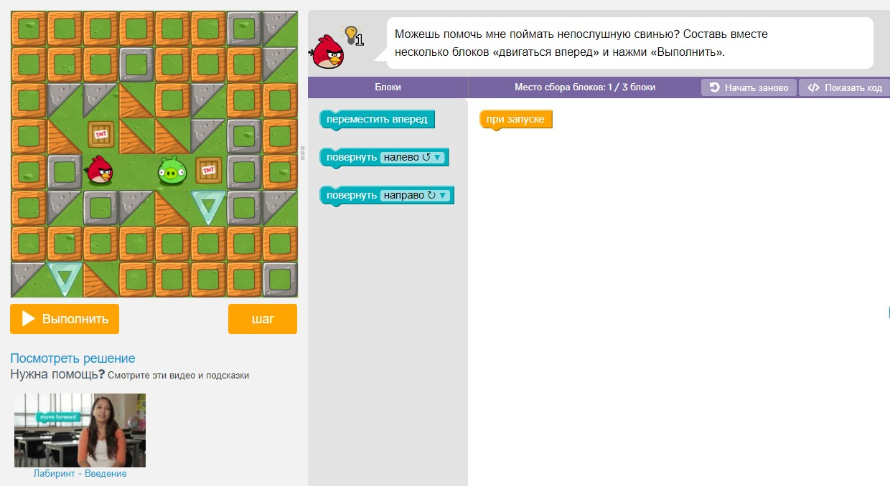Левая часть экрана - это лабиринт, в котором программа будет работать.
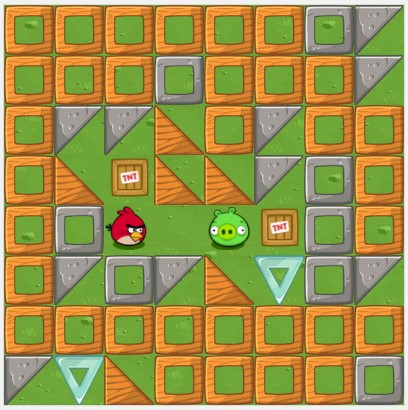Инструкции для каждой головоломки написаны сверху, правее от лабиринта
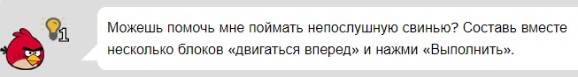Средняя часть экрана - это панель с командами для управления. Эти команды ты будешь использовать для создания своего кода.
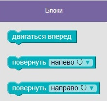Справа на экране — рабочее пространство, куда ты будешь переносить блоки из средней панели для создания программы. Чтобы удалить блок, перенесите его в корзину в углу.
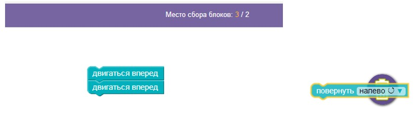Каждый блок - это одна инструкция. Если ты перенесёшь блок «двигаться вперед» в рабочую область и нажмешь кнопку «Запустить программу», птица продвинется в лабиринте на одну клетку вперед.
Чтобы выполнить более одного действия, можно перенести несколько блоков в рабочую область и собрать их вместе. Птица будет выполнять все действия, указанные в командах, сверху вниз.
Если ты запустил программу, а затем захотел что-то исправить и снова ее запустить, нажми кнопку «Сброс».
Задай этим хрюшкам!
У писателя Марка Твена есть очень крутое произведение: «Приключения Тома Сойера». Если ты его читал, то наверняка помнишь прикольную сцену, в которой Тому предстояло выполнить алгоритм по покраске забора:
«Художник от слова худо Том вышел на улицу с ведром извёстки и длинной кистью. Он окинул взглядом забор, и радость в одно мгновение улетела у него из души, и там воцарилась тоска... Со вздохом обмакнул он кисть в извёстку, провёл ею по крайней доске, потом проделал то же самое снова и остановился: как ничтожна белая полоска по сравнению с огромным пространством некрашеного забора!..»
Остановимся. В современном мире это выглядело бы иначе. Конечно, тётя Полли не стала бы огораживать свой дом тридцатью ярдами деревянного забора высотой девять футов! Скорее всего, лужайка возле её дома была бы огорожена изящными решётками на каменных столбиках. Нынешним мальчишкам не интересна покраска забора, зато они увлекаются rомпьютерами. Поэтому тётушка Полли могла бы давать наставления племяннику в виде алгоритмов, так любимых Томом:
1. Подойти к первой решётке; 2. Покрасить первый прутик; 3. Покрасить второй прутик; 4. Покрасить третий прутик; 5. Покрасить четвертый прутик; 6. Покрасить пятый прутик; 7. …. 101. Покрасить сотый прутик
А если бы тётя Полли была бы программистам, она бы вспомнила, что алгоритм можно записать гораздо короче, используя проверки и команды перехода:
1. Подойти к первой решетке 2. Покрасить решетку рядом с собой 3. Если есть еще некрашеные решетки, перейти к ней и начать с п.2 4. Готово!
Такой способ организации повторяющихся действий в алгоритмах называется циклом: он циклически (то есть «по кругу», «повторяя») выполняет какие-то действия. В данном случае – покраску прутика. Обрати внимание, что у цикла есть две части:
1. Условие. Оно показывает, нужно ли выполнять действия, которые относятся к циклу (говорят «тело цикла») 2. Тело цикла. Это алгоритм (несколько действий), который запускается, если условие верно (в случае покраски забора – если еще есть прутики без краски)
Ты изучаешь Blockly, и в нем циклы выглядят вот так:
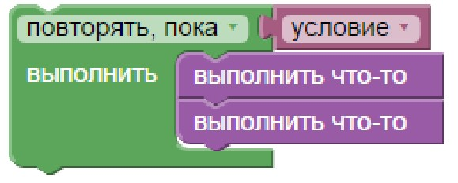Алгоритм покраски забора с использованием цикла будет выглядеть так:
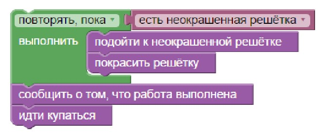Помимо чисел компьютер хранит и разную другую информацию, например - изображения. Ты наверняка знаешь, что такое пиксель – это одна «точка» на экране. Нельзя вывести на экран что-либо, меньшее одного пикселя. Так вот, изображения также состоят из пикселей, за исключением векторной графики.
Ты наверняка догадался, что самая главная характеристика пикселя – его цвет. И цвет каждого пикселя нужно уметь сохранить внутри памяти компьютера, а для этого… правильно! Придется перевести его в двоичный вид. Давай разберемся, как это может происходить.
Первый способ подойдет, если у нас всего два цвета – белый и черный. Пусть черный пиксель будет нулем, а белый – единицей. Ниже пример из девяти пикселей, закодированный в двоичный код таким способом. Ты уже наверняка догадался, что для цветных изображений такой подход не подойдет – цветов гораздо больше, чем два!
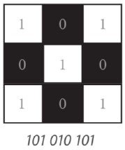Второй способ. Он самый сложный, но зато напрямую связан с тем, как ты видишь окружающий мир. Если ты когда-нибудь занимался рисованием, то точно знаешь, что можно смешивать несколько цветов в разных пропорциях, чтобы получить какой-нибудь новый (например, красный + зеленый = желтый, но только если цветов взять одинаково!). Этот принцип и используется для этого способа кодирования цвета. Ученые еще очень давно обнаружили, что можно взять три разных (но не любых!) цвета и, смешивая их между собой, получить все остальные. Так повелось, что чаще всего используется тройка «красный-зеленый-синий», или по-английски «red-green-blue». Часто не пишут все слова целиком, а оставляют только первую большую букву. Отсюда и пошло название способа – RGB-модель.
Итак, смысл такого кодирования в том, чтобы для каждого пикселя указать, сколько нужно взять зеленого, сколько – красного и сколько – синего. Затем все эти данные отправляются на монитор в нужный пиксель, где цвета и смешиваются, а ты видишь результат. Вот так все и происходит на самом деле!
Вот удобная шпаргалка, чтобы не забывать, какие цвета получаются при смешивании:
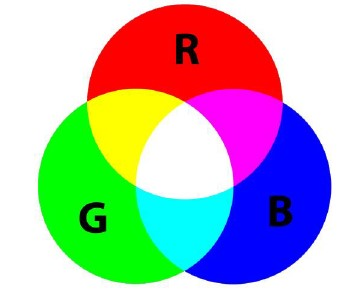Как видишь, белый цвет – это всех поровну.
А ты играл в двухмерную компьютерную игру Plants vs. Zombies? В этот раз тебе предстоит сыграть за зомби, помоги ему добраться до подсолнуха.
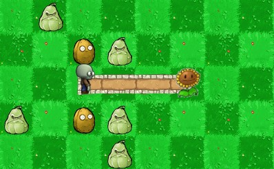Выполни следующее упражнение:
1) Помоги пчелке собрать нектар с цветов Ссылка на задание
2) Помоги художнику в более сложном задании. Тебе придется использовать цикл внутри цикла. Вперед! Ссылка на задание
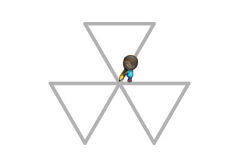Камынин А.И. Учебное пособие по курсу "Базовая подготовка" 2017 ©